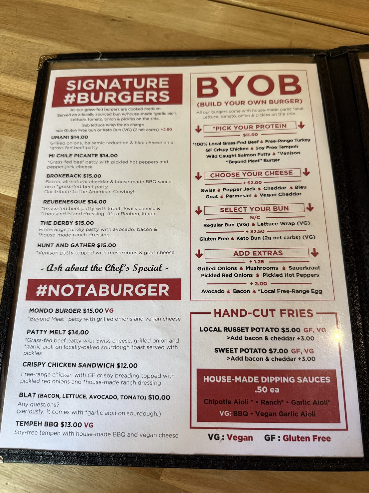
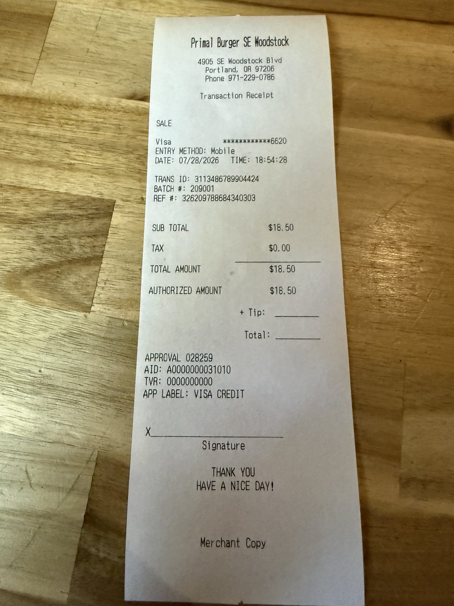
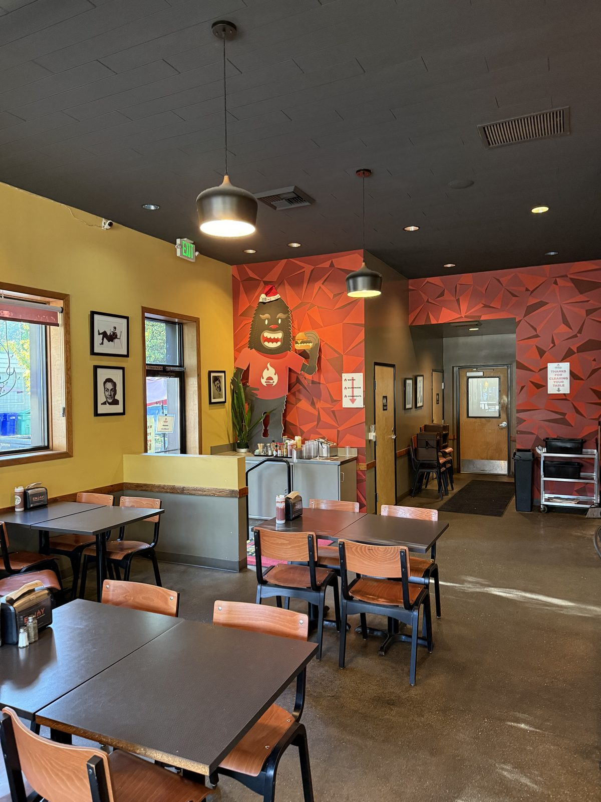

A Good Burger and a Locked Gate, at Dick's Primal Kitchen

I want to be careful about the order I tell this in, because the order is the whole problem. The food was good. The car was locked in a lot overnight. Those two facts belong to the same evening and the same address, and only one of them is the restaurant's fault, and the star at the top of this page is about the second one. So let me do the food first and properly, because it deserves that, and then we'll get to the gate.
The kitchen is not the problem
Dick's Primal Kitchen sits on the corner at SE Woodstock, dark corrugated metal with a terracotta-red block wall painted 100% GRASS-FED BEEF and, underneath, THE ORIGINAL HEALTH FOOD. Picnic tables out front under a red umbrella. Inside it's counter service — order at the register or at a kiosk, take a numbered stand to your table — with a mural of a burger-holding yeti on one wall and, on the back of the menu, a line I'd have written down even if the night had gone differently:
Dick's Primal Kitchen is one of the very few restaurants serving 100% grass-fed, humanely raised & pastured beef. Our ranchers are at the forefront of health & sustainable beef production.
The reason that's worth quoting is the word finished, which appears in the header just above it: "100% grass-fed and finished beef." A great many places will tell you their beef is grass-fed, which is nearly meaningless on its own, because almost all cattle start on grass. What happens in the last few months is where the money is and where most of the flavour claims quietly fall apart. Saying "and finished" is a specific, checkable commitment, and it costs them something — a fifteen-dollar burger at a counter-service place with picnic tables is the price of that sentence being true.

The menu is built to be taken apart. Signature burgers run fourteen to fifteen dollars, but the column that matters is BYOB — Build Your Own Burger — eleven dollars for the protein, and the protein list is where a small place shows its hand: grass-fed beef, free-range turkey, crispy chicken, soy-free tempeh, a wild-caught salmon patty, venison, Beyond Meat. Cheese is two dollars and there are seven of them. A lettuce wrap instead of a bun costs nothing; gluten-free or a two-net-carb keto bun is $2.50. There's a Pack Your Own Bowl column doing the same trick without bread at all.
The Brussels sprouts below I photographed rather than ate. Roasted hard at the edges, balsamic run over them, goat cheese broken over the top — five dollars for the side and two more for the cheese. I should say plainly that sprouts have never been my thing and I don't expect them to start being, so I'm no judge of these; I took the picture because they looked properly handled, which is more than a five-dollar side usually manages. Plenty of people order them on purpose. If that's you, that's the one on the menu that looked cared about.

Total for the evening: $18.50, no tax, because this is Oregon.
One thing has changed hands
Something worth knowing if you remember this place from before: Dick has sold it. I'm told the new owner has recently got the alcohol licence back and is working to make the thing go — there are taps behind the counter and the menu tells you to check the board for the beer, wine and cocktail list. The clearest evidence is on the receipt, which doesn't say Dick's Primal Kitchen at all. It prints Primal Burger SE Woodstock.

I mention all this because I'd genuinely like them to make it. A grass-fed and finished beef programme at counter-service prices is a hard thing to run and an easy thing to lose, and the neighbourhood is better with it than without it. Which is precisely why the next part is worth writing down rather than letting go.
The gate
I parked in the lot behind the restaurant. There is no sign at that entrance telling you what time the lot closes, no posted hours, nothing on the gate itself, and nobody at the counter mentioned it. We ate, paid out just before seven, and then did the most ordinary thing a person does after dinner on a warm July evening in Portland: we went for a walk.
We walked off at about half past eight. By the time we came back the gate was padlocked, with the car behind it — shut up, as best I can work out, some time after nine.
It stayed there all night. There was no way to get it out until the next day.
I understand a business wanting its property secure after close. That isn't the complaint. The complaint is that the cost of preventing this entirely is one sign, screwed to the gate you already own, naming the hour it locks — and in the absence of that sign the arrangement quietly converts your own paying customers into the people it inconveniences most. Nobody parks behind a restaurant they've just eaten at expecting to be locked out of their own car. That is not a risk a diner knows to price in.
It may well not even be the restaurant's gate. A lot behind a mixed-use building on Woodstock is very likely the property owner's to manage, and I have no way of knowing from the outside who turns the key. But the restaurant is the reason anybody is parking there in the evening, which makes it the only party positioned to warn them — either with a sign at the entrance or with a sentence at the register.